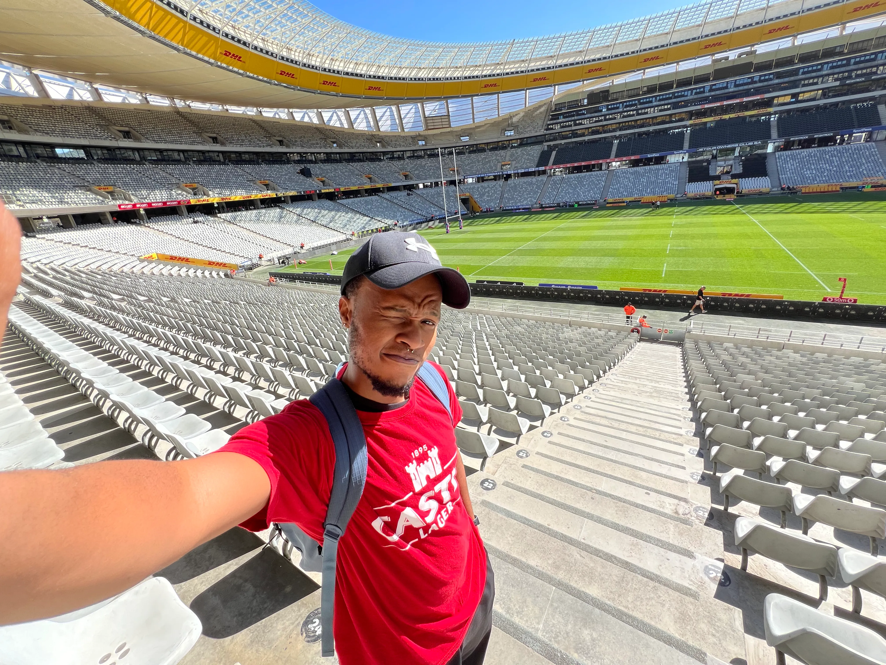
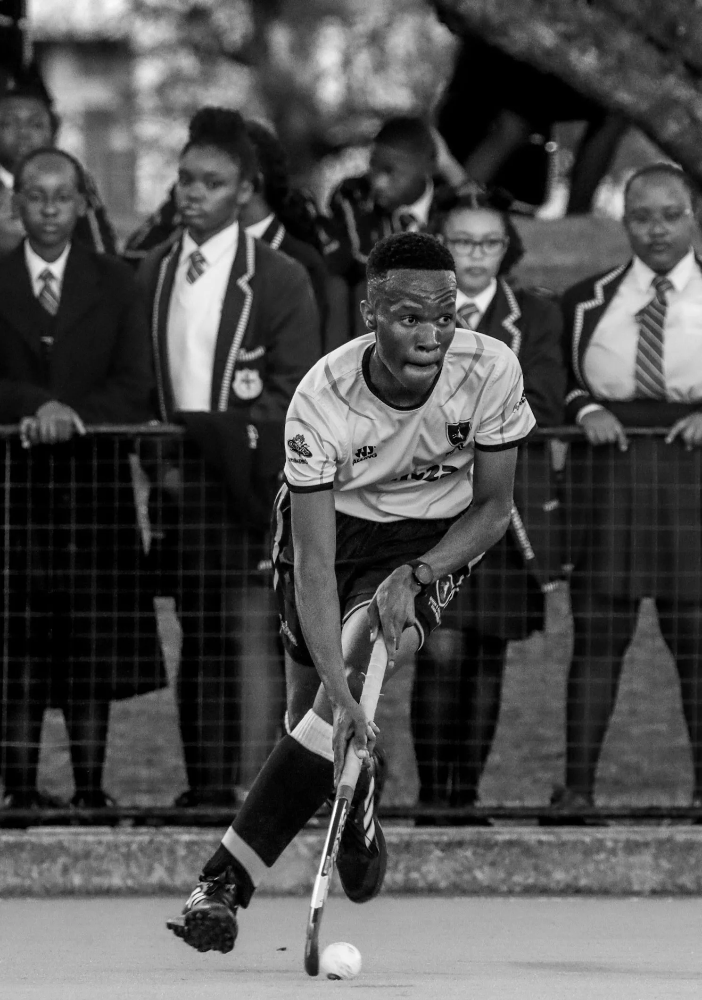
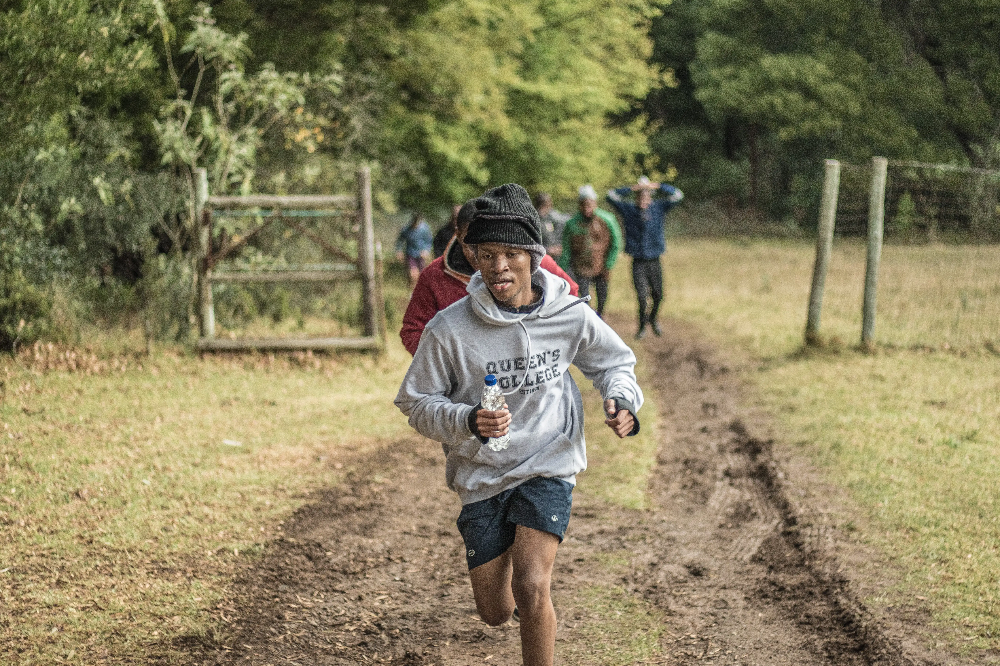

Bachelor of Commerce in Information Systems majoring in Statistics student at the University of the Western Cape
See the work ↓ Say hello


I'm a full-time student at the University of the Western Cape and a part-time coding enthusiast. I enjoy building solutions that solve real-world problems and make everyday tasks more efficient. I'm particularly interested in identifying business challenges and using data, mathematics, and technology to create practical solutions. I'm currently pursuing a Bachelor of Commerce in Information Systems, majoring in Statistics.
I believe I have a strong foundation in programming languages such as Delphi, Pascal, Python, and SQL. I also have experience with web development technologies like HTML, CSS, and FastAPI.
When I'm not coding, I'm exploring new ideas, finding music, and reading about the latest trends in technology (sometimes) and also going to the gym if not the astro turf.
Currently in my second year, majoring in Statistics.
Studying information systems, software development, databases, business analysis, and statistical methods.
Matriculated: November 2024
Result: Bachelor Pass
Distinctions:
• Computer Applications Technology
• Life Orientation
A handful of things I've built recently (majority are school projects), some are late-night side quests.
IFS242 Semester 1, 2nd-year group assignment focused on designing and developing a functional server-side website with customer and administrator access.
After learning about server-side programming in class, I started developing a supermarket online ordering system with role-based user access and product management.
An HR system developed for a first-year Information Systems group project, enabling remote management, dashboard insights, and API-based functionality with role-based access for employees, managers, and admins.
Grade 12 PAT: Developed a Residential Management System using Delphi and Microsoft Access with SQL-based database operations for managing tenants, units, and payments.
Peeled off my actual notebook. Not to scale, not in order of importance.
Got a project, a role, or just a fun idea? My inbox is always open, and I reply way faster than my best friend.